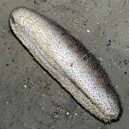
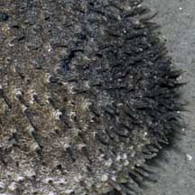
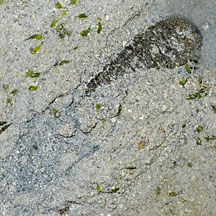
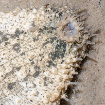

|
|
| sea cucumbers text index | photo index |
| Phylum Echinodermata > Class Holothuroidea |
| Garlic
bread sea cucumber Holothuria scabra Family Holothuriidae updated Apr 2020 Where seen? This large loaf-shaped sea cucumber is commonly seen in numbers in seagrass meadows of our Northern and Southern shores. Sometimes buried just beneath the sand, but also above ground. Features: 15-20cm long, elsewhere said to grow to 40cm. Loaf-shaped body, square-ended with a distinct upper and underside. Upperside darker and often has wrinkles and sometimes, black bars; thus resembling a Garlic bread. Underside flat, pale or white. Tube feet tiny and short, regularly distributed all over the body. It does not produce Cuvierian tubules. What does it eat? It feeds on and gathers detritus with the 20 or so short feeding tentacles that surround its mouth which usually faces downwards towards the ground. Baby cucumbers: Younger sea cucumbers are usually found nearer the shore. As they grow bigger, they move into deeper waters to breed. It reaches sexual maturity at about 15-25cm. Living in a sea cucumber: This sea cucumber has an internal breathing system of branching tubes along the length of the body. Called respiratory trees, these are connected to the opening on the backside. To breathe, the sea cucumber pumps water in through its backside and up through the respiratory trees. The water is then flushed out through the backside again. With this constant flow of water, some tiny creatures find the backside of a sea cucumber a well aerated but also safe place to be! Pea crabs (Pinnotheres sp.) are sometimes found living in the Garlic bread sea cucumber's rear end! These cannot be seen unless the animal is killed and dissected, so please do not prod the sea cucumber to try to see these crabs. Role in the habitat: A study has found that this sea cucumber plays an important role in the health of seagrasses. Much like terrestrial earthworms, by eating sediments and burrowing in the ground, the sea cucumber makes more nutrients available to the seagrasses. More about this on the Echinoblog. According to the IUCN Red List, juveniles settle in shallow seagrass beds and prefer seagrass such as Sickle seagrass (Thallassia hemprichi) as well as mangrove areas. |
 Upperside Chek Jawa, Jul 08 |
 Underside flat and pale. |
 Short tube feet |
 'Breathing' through its backside. Tanah Merah, Jun 12 |
 Often buried or half buried. Beting Bemban Besar, Jun 09 |
 Mouth with short feeding tentacles. Chek Jawa, Aug 07 |
| Human uses: This harmless sea
cucumber is among those collected as a Chinese delicacy. They are
gutted and dried for sale as 'trepang' or 'beche-de-mer'. It is called
sandfish in the trade. Growing up to 40cm and weighing up to 1.5kg,
it is considered the most widely collected and among the more valuable
sources of beche-de-mer. Tests indicate these sea cucumbers contain
toxins. They must be properly prepared before they are safe to eat. Collection of sea cucumbers has been a traditional activity for centuries by coastal peoples in many parts of the world ranging from Madagascar to the Philippines. However, the recent high market price of this delicacy has resulted in increased collection in last 20 years. Some edible sea cucumbers are globally threatened by over-collection. In some areas, such sea cucumbers have become scarce. In others, specimens collected are smaller and have to be harvested from deeper waters. Efforts to culture edible sea cucumbers have only just started. Status and threats: The Garlic bread sea cucumber is listed as 'Vulnerable' on the Red List of threatened animals of Singapore. It is threatened by habitat loss due to coastal development. Overcollection can also have an impact on local populations. According to the IUCN Red List, global populations of the Garlic bread sea cucumbers are estimated to have declined by more than 90% in at least 50% of its range, and are considered overexploited in at least 30% of its range. |
| Garlic bread sea cucumbers on Singapore shores |
On wildsingapore
flickr
|
| Other sightings on Singapore shores |
|
Links
References
|